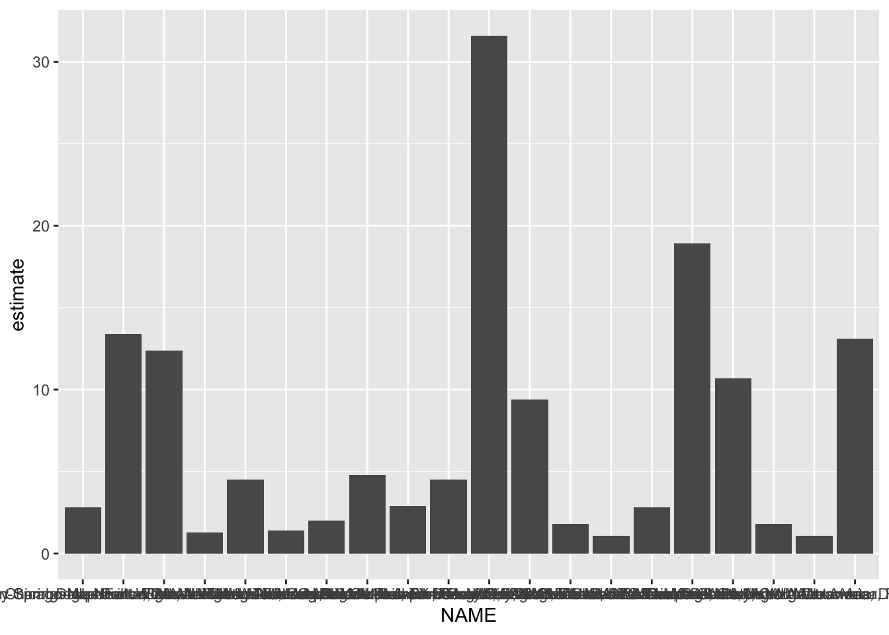
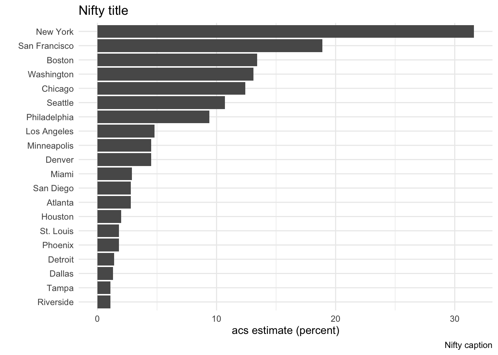
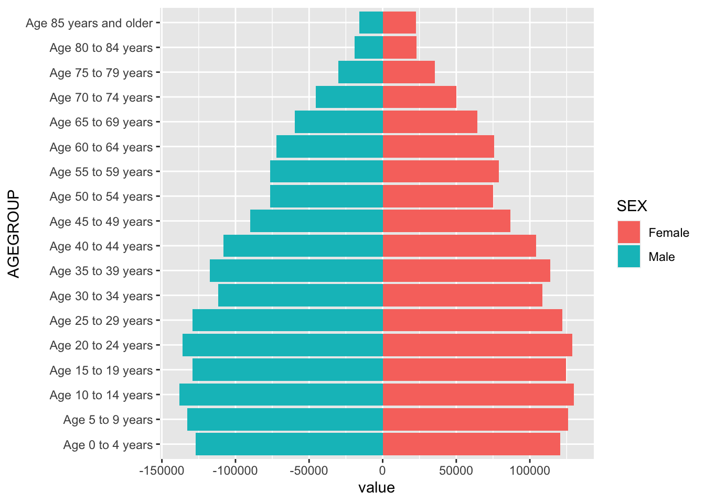
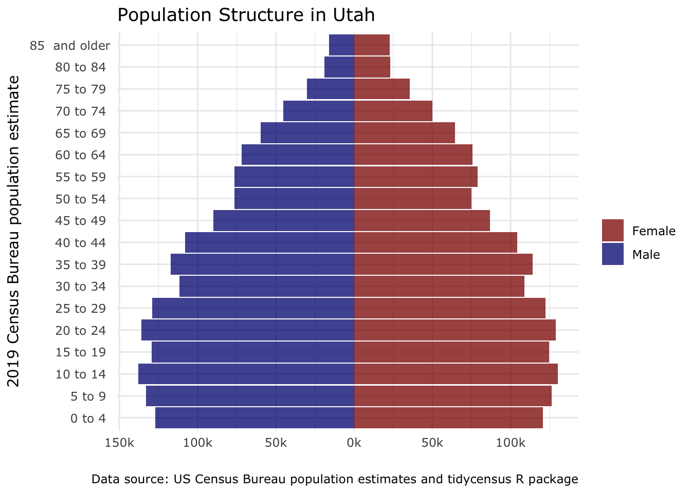
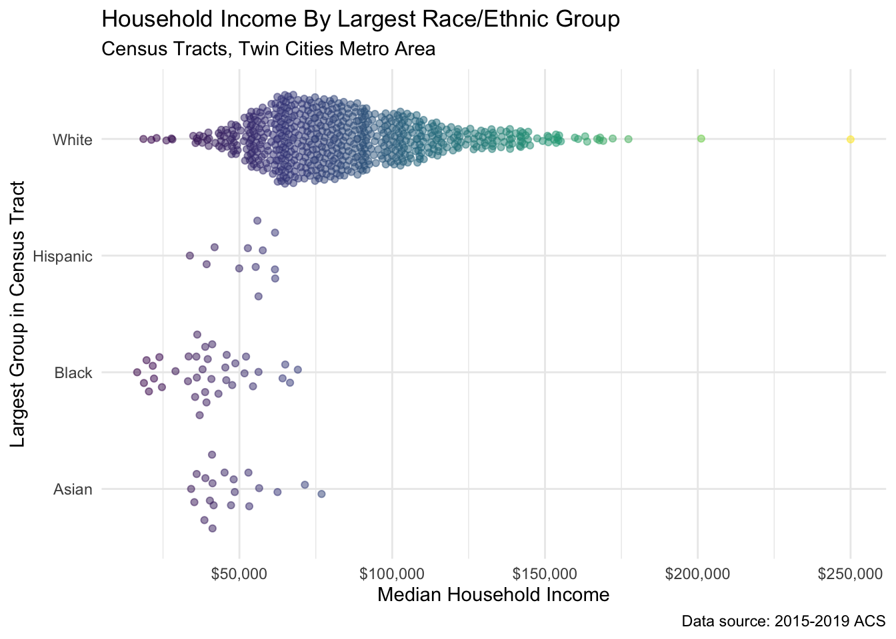

Chapter 15 US_Census_Data_Kyle_Walker_Presentation_YouTube
These are notes from a course taught by Kyle Walker, PhD and posted to YouTube by John DeWitt at the following YouTube https://www.youtube.com/watch?v=PnFJfuJ83NI
library(tidyverse)
library(tidycensus)
library(plotly)
# install a new API key if necessary by obtaining a new key and installing it with the following
# census_api_key("aec016261a3b069f2318c77075e5224445517668", install = TRUE)Let’s see if this will connect me with the census data with a few simple queries. get_decennial() defaults to the latest 10-year, simple survey performed by the Census Bureau. The 10-year survey renders numbers.
get_acs() contains much more information, and is based on the latest American Community Survey. ACS variables are rendered as estimates with a margin of error (MOE).
pop10 <- get_decennial(geography = "state", variables = "P001001")## Getting data from the 2010 decennial Census## Using Census Summary File 1pop10## # A tibble: 52 x 4
## GEOID NAME variable value
## <chr> <chr> <chr> <dbl>
## 1 01 Alabama P001001 4779736
## 2 02 Alaska P001001 710231
## 3 04 Arizona P001001 6392017
## 4 05 Arkansas P001001 2915918
## 5 06 California P001001 37253956
## 6 22 Louisiana P001001 4533372
## 7 21 Kentucky P001001 4339367
## 8 08 Colorado P001001 5029196
## 9 09 Connecticut P001001 3574097
## 10 10 Delaware P001001 897934
## # … with 42 more rowsincome_15to19 <- get_acs(geography = "state",
variables = "B19013_001")## Getting data from the 2015-2019 5-year ACSincome_19 <- get_acs(geography = "state",
variables = "B19013_001",
survey = "acs1")## The 1-year ACS provides data for geographies with populations of 65,000 and greater.## Getting data from the 2019 1-year ACSThat looks great, but would be very labor intensive to assemble piecemeal.
Luckily, common tables of variables are available.
age_table<- get_acs(geography = "state",
table = "B01001")## Getting data from the 2015-2019 5-year ACS## Loading ACS5 variables for 2019 from table B01001. To cache this dataset for faster access to ACS tables in the future, run this function with `cache_table = TRUE`. You only need to do this once per ACS dataset.age_table## # A tibble: 2,548 x 5
## GEOID NAME variable estimate moe
## <chr> <chr> <chr> <dbl> <dbl>
## 1 01 Alabama B01001_001 4876250 NA
## 2 01 Alabama B01001_002 2359355 1270
## 3 01 Alabama B01001_003 149090 704
## 4 01 Alabama B01001_004 153494 2290
## 5 01 Alabama B01001_005 158617 2274
## 6 01 Alabama B01001_006 98257 468
## 7 01 Alabama B01001_007 64980 834
## 8 01 Alabama B01001_008 35870 1436
## 9 01 Alabama B01001_009 35040 1472
## 10 01 Alabama B01001_010 95065 1916
## # … with 2,538 more rowsThat’s great, but the variables are still encoded in the long form of the table. We’ll need to solve that at some point.
wi_income <- get_acs(geography = "county",
variables = "B19013_001",
state = "WI",
year = 2019)## Getting data from the 2015-2019 5-year ACSwi_income## # A tibble: 72 x 5
## GEOID NAME variable estimate moe
## <chr> <chr> <chr> <dbl> <dbl>
## 1 55001 Adams County, Wisconsin B19013_001 46369 1834
## 2 55003 Ashland County, Wisconsin B19013_001 42510 2858
## 3 55005 Barron County, Wisconsin B19013_001 52703 2104
## 4 55007 Bayfield County, Wisconsin B19013_001 56096 1877
## 5 55009 Brown County, Wisconsin B19013_001 62340 1112
## 6 55011 Buffalo County, Wisconsin B19013_001 57829 1873
## 7 55013 Burnett County, Wisconsin B19013_001 52672 1388
## 8 55015 Calumet County, Wisconsin B19013_001 75814 2425
## 9 55017 Chippewa County, Wisconsin B19013_001 59742 1759
## 10 55019 Clark County, Wisconsin B19013_001 54012 1223
## # … with 62 more rowsQuerying by census tract is also possible. Census tracts are loosely analogous to neighborhoods and contain about 4000 people.
dane_income <- get_acs(geography = "tract",
variables = "B19013_001",
state = "WI",
county = "Dane")## Getting data from the 2015-2019 5-year ACSdane_income## # A tibble: 107 x 5
## GEOID NAME variable estimate moe
## <chr> <chr> <chr> <dbl> <dbl>
## 1 55025000100 Census Tract 1, Dane County, Wisconsin B19013_0… 72471 12984
## 2 55025000201 Census Tract 2.01, Dane County, Wiscons… B19013_0… 94821 11860
## 3 55025000202 Census Tract 2.02, Dane County, Wiscons… B19013_0… 84145 7021
## 4 55025000204 Census Tract 2.04, Dane County, Wiscons… B19013_0… 79617 11823
## 5 55025000205 Census Tract 2.05, Dane County, Wiscons… B19013_0… 91326 13453
## 6 55025000300 Census Tract 3, Dane County, Wisconsin B19013_0… 53778 7593
## 7 55025000401 Census Tract 4.01, Dane County, Wiscons… B19013_0… 98178 7330
## 8 55025000402 Census Tract 4.02, Dane County, Wiscons… B19013_0… 107440 6585
## 9 55025000405 Census Tract 4.05, Dane County, Wiscons… B19013_0… 68911 4141
## 10 55025000406 Census Tract 4.06, Dane County, Wiscons… B19013_0… 74489 10451
## # … with 97 more rows15.1 Variables
vars <- load_variables(2019, "acs5")
vars## # A tibble: 27,040 x 3
## name label concept
## <chr> <chr> <chr>
## 1 B01001_001 Estimate!!Total: SEX BY AGE
## 2 B01001_002 Estimate!!Total:!!Male: SEX BY AGE
## 3 B01001_003 Estimate!!Total:!!Male:!!Under 5 years SEX BY AGE
## 4 B01001_004 Estimate!!Total:!!Male:!!5 to 9 years SEX BY AGE
## 5 B01001_005 Estimate!!Total:!!Male:!!10 to 14 years SEX BY AGE
## 6 B01001_006 Estimate!!Total:!!Male:!!15 to 17 years SEX BY AGE
## 7 B01001_007 Estimate!!Total:!!Male:!!18 and 19 years SEX BY AGE
## 8 B01001_008 Estimate!!Total:!!Male:!!20 years SEX BY AGE
## 9 B01001_009 Estimate!!Total:!!Male:!!21 years SEX BY AGE
## 10 B01001_010 Estimate!!Total:!!Male:!!22 to 24 years SEX BY AGE
## # … with 27,030 more rowsThis can be searched using RStudio’s View() function, but it’s still a mess. De Witt uses Census Reporter a lot–search online for this. Try https://censusreporter.org/, especially the Explore search field, which is a good way to identify good variables. One useful trick is to find the table identifier in Census Reporter and then use that to explore variables loaded using load_variables().
Another invaluable resource is https://rconsortium.github.io/censusguide/.
The census.gov tools are also extensive. See for instance https://www.census.gov/data/academy/data-gems/2021/how-to-visualize-your-data-using-thematic-maps-on-data-census-gov.html.
hhinc <- get_acs(
geography = "state",
table = "B19001",
survey = "acs1"
)## The 1-year ACS provides data for geographies with populations of 65,000 and greater.## Getting data from the 2019 1-year ACS## Loading ACS1 variables for 2019 from table B19001. To cache this dataset for faster access to ACS tables in the future, run this function with `cache_table = TRUE`. You only need to do this once per ACS dataset. hhinc## # A tibble: 884 x 5
## GEOID NAME variable estimate moe
## <chr> <chr> <chr> <dbl> <dbl>
## 1 01 Alabama B19001_001 1897576 10370
## 2 01 Alabama B19001_002 154558 5883
## 3 01 Alabama B19001_003 103653 6001
## 4 01 Alabama B19001_004 108500 5926
## 5 01 Alabama B19001_005 98706 6491
## 6 01 Alabama B19001_006 90916 5859
## 7 01 Alabama B19001_007 105146 4149
## 8 01 Alabama B19001_008 85014 5417
## 9 01 Alabama B19001_009 87118 5163
## 10 01 Alabama B19001_010 82323 4231
## # … with 874 more rows glimpse(hhinc)## Rows: 884
## Columns: 5
## $ GEOID <chr> "01", "01", "01", "01", "01", "01", "01", "01", "01", "01", "…
## $ NAME <chr> "Alabama", "Alabama", "Alabama", "Alabama", "Alabama", "Alaba…
## $ variable <chr> "B19001_001", "B19001_002", "B19001_003", "B19001_004", "B190…
## $ estimate <dbl> 1897576, 154558, 103653, 108500, 98706, 90916, 105146, 85014,…
## $ moe <dbl> 10370, 5883, 6001, 5926, 6491, 5859, 4149, 5417, 5163, 4231, … str(hhinc)## tibble [884 × 5] (S3: tbl_df/tbl/data.frame)
## $ GEOID : chr [1:884] "01" "01" "01" "01" ...
## $ NAME : chr [1:884] "Alabama" "Alabama" "Alabama" "Alabama" ...
## $ variable: chr [1:884] "B19001_001" "B19001_002" "B19001_003" "B19001_004" ...
## $ estimate: num [1:884] 1897576 154558 103653 108500 98706 ...
## $ moe : num [1:884] 10370 5883 6001 5926 6491 ...This is pretty tough to read. A wide form is easier and can be had without using pivot_wider().
hhinc_wide <- get_acs(
geography = "state",
table = "B19001",
survey = "acs1",
output = "wide"
)## The 1-year ACS provides data for geographies with populations of 65,000 and greater.## Getting data from the 2019 1-year ACS## Loading ACS1 variables for 2019 from table B19001. To cache this dataset for faster access to ACS tables in the future, run this function with `cache_table = TRUE`. You only need to do this once per ACS dataset.hhinc_wide## # A tibble: 52 x 36
## GEOID NAME B19001_001E B19001_001M B19001_002E B19001_002M B19001_003E
## <chr> <chr> <dbl> <dbl> <dbl> <dbl> <dbl>
## 1 28 Mississippi 1100229 9887 102072 5891 72195
## 2 29 Missouri 2458337 10406 155827 6687 111813
## 3 30 Montana 437651 4637 23489 2194 21550
## 4 31 Nebraska 771444 4475 37219 2805 30395
## 5 32 Nevada 1143557 8281 68825 4164 45099
## 6 33 New Hampsh… 541396 5389 21229 2566 16539
## 7 34 New Jersey 3286264 9466 154374 7219 95123
## 8 35 New Mexico 793420 7074 65613 4413 42519
## 9 36 New York 7446812 13820 497771 10405 329325
## 10 37 North Caro… 4046348 15467 251158 9332 187653
## # … with 42 more rows, and 29 more variables: B19001_003M <dbl>,
## # B19001_004E <dbl>, B19001_004M <dbl>, B19001_005E <dbl>, B19001_005M <dbl>,
## # B19001_006E <dbl>, B19001_006M <dbl>, B19001_007E <dbl>, B19001_007M <dbl>,
## # B19001_008E <dbl>, B19001_008M <dbl>, B19001_009E <dbl>, B19001_009M <dbl>,
## # B19001_010E <dbl>, B19001_010M <dbl>, B19001_011E <dbl>, B19001_011M <dbl>,
## # B19001_012E <dbl>, B19001_012M <dbl>, B19001_013E <dbl>, B19001_013M <dbl>,
## # B19001_014E <dbl>, B19001_014M <dbl>, B19001_015E <dbl>, B19001_015M <dbl>,
## # B19001_016E <dbl>, B19001_016M <dbl>, B19001_017E <dbl>, B19001_017M <dbl>glimpse(hhinc_wide)## Rows: 52
## Columns: 36
## $ GEOID <chr> "28", "29", "30", "31", "32", "33", "34", "35", "36", "37"…
## $ NAME <chr> "Mississippi", "Missouri", "Montana", "Nebraska", "Nevada"…
## $ B19001_001E <dbl> 1100229, 2458337, 437651, 771444, 1143557, 541396, 3286264…
## $ B19001_001M <dbl> 9887, 10406, 4637, 4475, 8281, 5389, 9466, 7074, 13820, 15…
## $ B19001_002E <dbl> 102072, 155827, 23489, 37219, 68825, 21229, 154374, 65613,…
## $ B19001_002M <dbl> 5891, 6687, 2194, 2805, 4164, 2566, 7219, 4413, 10405, 933…
## $ B19001_003E <dbl> 72195, 111813, 21550, 30395, 45099, 16539, 95123, 42519, 3…
## $ B19001_003M <dbl> 5563, 5577, 2415, 2679, 3502, 2663, 5069, 3479, 10854, 808…
## $ B19001_004E <dbl> 74167, 115140, 21335, 26514, 39946, 16216, 91608, 41543, 2…
## $ B19001_004M <dbl> 4559, 5621, 1726, 2433, 3403, 2271, 5576, 3752, 8790, 7905…
## $ B19001_005E <dbl> 63780, 122095, 23022, 35113, 50808, 19054, 113018, 48909, …
## $ B19001_005M <dbl> 4127, 5489, 2418, 2753, 4299, 2165, 5398, 4239, 9953, 7810…
## $ B19001_006E <dbl> 64942, 111981, 18577, 30390, 44720, 18377, 96889, 41728, 2…
## $ B19001_006M <dbl> 4703, 5528, 1955, 2643, 3607, 2294, 6271, 4027, 10138, 828…
## $ B19001_007E <dbl> 58033, 121608, 21148, 36654, 48167, 18368, 112428, 39967, …
## $ B19001_007M <dbl> 4432, 5756, 2408, 2792, 3496, 2010, 6077, 3532, 9361, 6745…
## $ B19001_008E <dbl> 55748, 113730, 20959, 32908, 46762, 15983, 98003, 32647, 2…
## $ B19001_008M <dbl> 4483, 5553, 2769, 2509, 3920, 1838, 5978, 3073, 9135, 8731…
## $ B19001_009E <dbl> 51897, 116231, 21917, 37925, 51108, 22257, 104770, 37765, …
## $ B19001_009M <dbl> 4901, 5683, 2316, 3333, 3854, 2391, 6257, 2701, 10075, 760…
## $ B19001_010E <dbl> 43423, 104380, 20023, 31514, 51006, 21203, 93426, 28960, 2…
## $ B19001_010M <dbl> 3597, 4723, 2670, 2681, 4531, 2169, 5753, 3159, 9161, 7460…
## $ B19001_011E <dbl> 86214, 198458, 36769, 64039, 90046, 39230, 202459, 63845, …
## $ B19001_011M <dbl> 5966, 7477, 3056, 3492, 5207, 3351, 7998, 4301, 12232, 917…
## $ B19001_012E <dbl> 105304, 260646, 44994, 86318, 123473, 52252, 290552, 79144…
## $ B19001_012M <dbl> 5907, 7646, 3051, 3863, 5807, 3758, 8825, 4473, 13405, 120…
## $ B19001_013E <dbl> 122825, 318344, 58858, 111438, 159361, 76433, 401067, 9694…
## $ B19001_013M <dbl> 6357, 8489, 3855, 4655, 6715, 4378, 11429, 5032, 14989, 13…
## $ B19001_014E <dbl> 72151, 216220, 39064, 75244, 116598, 61021, 343771, 60173,…
## $ B19001_014M <dbl> 4143, 6681, 2723, 3690, 5686, 4132, 10134, 4229, 12558, 10…
## $ B19001_015E <dbl> 47726, 135532, 23818, 47119, 64746, 40422, 250060, 38540, …
## $ B19001_015M <dbl> 3282, 5371, 2653, 3029, 3977, 3563, 8064, 3416, 11556, 806…
## $ B19001_016E <dbl> 44171, 129949, 23210, 47279, 69365, 49858, 338989, 39437, …
## $ B19001_016M <dbl> 3353, 6087, 2351, 2722, 4085, 3039, 9700, 3428, 12227, 710…
## $ B19001_017E <dbl> 35581, 126383, 18918, 41375, 73527, 52954, 499727, 35685, …
## $ B19001_017M <dbl> 2826, 5183, 2211, 2731, 4035, 3332, 8735, 2595, 12818, 645…str(hhinc_wide)## tibble [52 × 36] (S3: tbl_df/tbl/data.frame)
## $ GEOID : chr [1:52] "28" "29" "30" "31" ...
## $ NAME : chr [1:52] "Mississippi" "Missouri" "Montana" "Nebraska" ...
## $ B19001_001E: num [1:52] 1100229 2458337 437651 771444 1143557 ...
## $ B19001_001M: num [1:52] 9887 10406 4637 4475 8281 ...
## $ B19001_002E: num [1:52] 102072 155827 23489 37219 68825 ...
## $ B19001_002M: num [1:52] 5891 6687 2194 2805 4164 ...
## $ B19001_003E: num [1:52] 72195 111813 21550 30395 45099 ...
## $ B19001_003M: num [1:52] 5563 5577 2415 2679 3502 ...
## $ B19001_004E: num [1:52] 74167 115140 21335 26514 39946 ...
## $ B19001_004M: num [1:52] 4559 5621 1726 2433 3403 ...
## $ B19001_005E: num [1:52] 63780 122095 23022 35113 50808 ...
## $ B19001_005M: num [1:52] 4127 5489 2418 2753 4299 ...
## $ B19001_006E: num [1:52] 64942 111981 18577 30390 44720 ...
## $ B19001_006M: num [1:52] 4703 5528 1955 2643 3607 ...
## $ B19001_007E: num [1:52] 58033 121608 21148 36654 48167 ...
## $ B19001_007M: num [1:52] 4432 5756 2408 2792 3496 ...
## $ B19001_008E: num [1:52] 55748 113730 20959 32908 46762 ...
## $ B19001_008M: num [1:52] 4483 5553 2769 2509 3920 ...
## $ B19001_009E: num [1:52] 51897 116231 21917 37925 51108 ...
## $ B19001_009M: num [1:52] 4901 5683 2316 3333 3854 ...
## $ B19001_010E: num [1:52] 43423 104380 20023 31514 51006 ...
## $ B19001_010M: num [1:52] 3597 4723 2670 2681 4531 ...
## $ B19001_011E: num [1:52] 86214 198458 36769 64039 90046 ...
## $ B19001_011M: num [1:52] 5966 7477 3056 3492 5207 ...
## $ B19001_012E: num [1:52] 105304 260646 44994 86318 123473 ...
## $ B19001_012M: num [1:52] 5907 7646 3051 3863 5807 ...
## $ B19001_013E: num [1:52] 122825 318344 58858 111438 159361 ...
## $ B19001_013M: num [1:52] 6357 8489 3855 4655 6715 ...
## $ B19001_014E: num [1:52] 72151 216220 39064 75244 116598 ...
## $ B19001_014M: num [1:52] 4143 6681 2723 3690 5686 ...
## $ B19001_015E: num [1:52] 47726 135532 23818 47119 64746 ...
## $ B19001_015M: num [1:52] 3282 5371 2653 3029 3977 ...
## $ B19001_016E: num [1:52] 44171 129949 23210 47279 69365 ...
## $ B19001_016M: num [1:52] 3353 6087 2351 2722 4085 ...
## $ B19001_017E: num [1:52] 35581 126383 18918 41375 73527 ...
## $ B19001_017M: num [1:52] 2826 5183 2211 2731 4035 ...We still aren’t transparent with respect to vectors. I will never remember them. Named vectors can be used:
ga_wide <- get_acs(
geography = "county",
state = "GA",
variables = c(median_inc = "B19013_001",
median_age = "B01002_001"),
output = "wide"
)## Getting data from the 2015-2019 5-year ACSga_wide## # A tibble: 159 x 6
## GEOID NAME median_incE median_incM median_ageE median_ageM
## <chr> <chr> <dbl> <dbl> <dbl> <dbl>
## 1 13005 Bacon County, Georgia 37519 5492 36.7 0.7
## 2 13025 Brantley County, Georg… 38857 3480 41.1 0.8
## 3 13017 Ben Hill County, Georg… 32229 3845 39.9 1.1
## 4 13033 Burke County, Georgia 44151 2438 37.4 0.6
## 5 13047 Catoosa County, Georgia 56235 2290 40.4 0.4
## 6 13053 Chattahoochee County, … 47096 5158 24.5 0.5
## 7 13055 Chattooga County, Geor… 36807 2268 39.4 0.7
## 8 13073 Columbia County, Georg… 82339 3532 36.9 0.4
## 9 13087 Decatur County, Georgia 41481 3584 37.8 0.6
## 10 13115 Floyd County, Georgia 48336 2266 38.3 0.3
## # … with 149 more rowsLet’s try something closer to home:
med_age_Hennepin_wide <- get_acs(
geography = "tract",
state = "MN",
variables = c(median_age = "B01002_001"),
output = "wide"
)## Getting data from the 2015-2019 5-year ACSmed_age_Hennepin_wide## # A tibble: 1,338 x 4
## GEOID NAME median_ageE median_ageM
## <chr> <chr> <dbl> <dbl>
## 1 27053025401 Census Tract 254.01, Hennepin County, Mi… 37.4 3.8
## 2 27053025805 Census Tract 258.05, Hennepin County, Mi… 52.2 6
## 3 27053026018 Census Tract 260.18, Hennepin County, Mi… 41.9 1.8
## 4 27053026402 Census Tract 264.02, Hennepin County, Mi… 36.1 2.9
## 5 27053026404 Census Tract 264.04, Hennepin County, Mi… 50.5 3.7
## 6 27053026809 Census Tract 268.09, Hennepin County, Mi… 29.1 2.2
## 7 27053027602 Census Tract 276.02, Hennepin County, Mi… 45.9 3.6
## 8 27053102000 Census Tract 1020, Hennepin County, Minn… 33.9 3.6
## 9 27053103600 Census Tract 1036, Hennepin County, Minn… 47.9 5.1
## 10 27053022902 Census Tract 229.02, Hennepin County, Mi… 40.2 3.1
## # … with 1,328 more rowsvs15 <- load_variables(2015, "acs5", cache = TRUE)
mn_wide <- get_acs(
geography = "county",
state = "MN",
variables = c(total_pop = "B01003_001",
median_inc = "B19013_001",
median_age = "B01002_001",
white = "B02001_002",
black = "B02001_003",
native_am = "B02001_004",
asian = "B02001_005",
doctor = "B15003_025"),
output = "wide"
)## Getting data from the 2015-2019 5-year ACSmn_wide## # A tibble: 87 x 18
## GEOID NAME total_popE total_popM median_incE median_incM median_ageE
## <chr> <chr> <dbl> <dbl> <dbl> <dbl> <dbl>
## 1 27093 Meeker Count… 23105 NA 63452 1601 42.2
## 2 27131 Rice County,… 66185 NA 68584 2227 36.5
## 3 27125 Red Lake Cou… 4015 NA 58576 4262 42.7
## 4 27027 Clay County,… 63446 NA 65269 2909 32.6
## 5 27045 Fillmore Cou… 20949 NA 61207 1604 42.3
## 6 27119 Polk County,… 31521 NA 59343 2282 38.7
## 7 27143 Sibley Count… 14892 NA 63439 1646 41.7
## 8 27165 Watonwan Cou… 10972 NA 54065 2930 39.9
## 9 27011 Big Stone Co… 4996 NA 53900 5054 49
## 10 27021 Cass County,… 29268 NA 52204 1447 48.9
## # … with 77 more rows, and 11 more variables: median_ageM <dbl>, whiteE <dbl>,
## # whiteM <dbl>, blackE <dbl>, blackM <dbl>, native_amE <dbl>,
## # native_amM <dbl>, asianE <dbl>, asianM <dbl>, doctorE <dbl>, doctorM <dbl>15.2 Part 2: Wrangling Census Data with tidyverse Tools
median_age <- get_acs(
geography = "county",
variables = "B01002_001"
)## Getting data from the 2015-2019 5-year ACSarrange(median_age, estimate)## # A tibble: 3,220 x 5
## GEOID NAME variable estimate moe
## <chr> <chr> <chr> <dbl> <dbl>
## 1 51678 Lexington city, Virginia B01002_001 22.3 0.7
## 2 51750 Radford city, Virginia B01002_001 23.4 0.5
## 3 16065 Madison County, Idaho B01002_001 23.5 0.2
## 4 46121 Todd County, South Dakota B01002_001 23.8 0.4
## 5 02158 Kusilvak Census Area, Alaska B01002_001 24.1 0.2
## 6 13053 Chattahoochee County, Georgia B01002_001 24.5 0.5
## 7 53075 Whitman County, Washington B01002_001 24.7 0.3
## 8 49049 Utah County, Utah B01002_001 24.8 0.1
## 9 46027 Clay County, South Dakota B01002_001 24.9 0.4
## 10 51830 Williamsburg city, Virginia B01002_001 24.9 0.7
## # … with 3,210 more rowsarrange(median_age, desc(estimate))## # A tibble: 3,220 x 5
## GEOID NAME variable estimate moe
## <chr> <chr> <chr> <dbl> <dbl>
## 1 12119 Sumter County, Florida B01002_001 67.4 0.2
## 2 51091 Highland County, Virginia B01002_001 60.9 3.5
## 3 08027 Custer County, Colorado B01002_001 59.7 2.6
## 4 12015 Charlotte County, Florida B01002_001 59.1 0.2
## 5 41069 Wheeler County, Oregon B01002_001 59 3.3
## 6 51133 Northumberland County, Virginia B01002_001 58.9 0.7
## 7 26131 Ontonagon County, Michigan B01002_001 58.6 0.4
## 8 35021 Harding County, New Mexico B01002_001 58.5 5.5
## 9 53031 Jefferson County, Washington B01002_001 58.3 0.7
## 10 26001 Alcona County, Michigan B01002_001 58.2 0.3
## # … with 3,210 more rowsabove50 <- filter(median_age, estimate >=50)Note how DeWitt assembles the following race/ethnicity groups, and then applies a summary variable:
race_vars <- c(
white = "B03002_003",
black = "B03002_004",
native = "B03002_005",
asian = "B03002_006",
HIPI = "B03002_007",
hispanic = "B03002_012"
)
az_race <- get_acs(
geography = "county",
state = "AZ",
variables = race_vars,
summary_var = "B03002_001"
)## Getting data from the 2015-2019 5-year ACSaz_race## # A tibble: 90 x 7
## GEOID NAME variable estimate moe summary_est summary_moe
## <chr> <chr> <chr> <dbl> <dbl> <dbl> <dbl>
## 1 04001 Apache County, Arizona white 13022 4 71511 NA
## 2 04001 Apache County, Arizona black 373 138 71511 NA
## 3 04001 Apache County, Arizona native 52285 234 71511 NA
## 4 04001 Apache County, Arizona asian 246 78 71511 NA
## 5 04001 Apache County, Arizona HIPI 16 16 71511 NA
## 6 04001 Apache County, Arizona hispanic 4531 NA 71511 NA
## 7 04003 Cochise County, Arizona white 69216 235 125867 NA
## 8 04003 Cochise County, Arizona black 4620 247 125867 NA
## 9 04003 Cochise County, Arizona native 1142 191 125867 NA
## 10 04003 Cochise County, Arizona asian 2431 162 125867 NA
## # … with 80 more rows15.2.1 Normalizing the data with mutate().
az_race_percent <- az_race %>%
mutate(percent = 100*(estimate/summary_est)) %>%
select(NAME, variable, percent)
az_race_percent## # A tibble: 90 x 3
## NAME variable percent
## <chr> <chr> <dbl>
## 1 Apache County, Arizona white 18.2
## 2 Apache County, Arizona black 0.522
## 3 Apache County, Arizona native 73.1
## 4 Apache County, Arizona asian 0.344
## 5 Apache County, Arizona HIPI 0.0224
## 6 Apache County, Arizona hispanic 6.34
## 7 Cochise County, Arizona white 55.0
## 8 Cochise County, Arizona black 3.67
## 9 Cochise County, Arizona native 0.907
## 10 Cochise County, Arizona asian 1.93
## # … with 80 more rows15.2.2 group_by() and summarize() in census analysis
largest_group <- az_race_percent %>%
group_by(NAME) %>%
filter(percent == max(percent))
largest_group## # A tibble: 15 x 3
## # Groups: NAME [15]
## NAME variable percent
## <chr> <chr> <dbl>
## 1 Apache County, Arizona native 73.1
## 2 Cochise County, Arizona white 55.0
## 3 Coconino County, Arizona white 54.1
## 4 Gila County, Arizona white 62.3
## 5 Graham County, Arizona white 50.9
## 6 Greenlee County, Arizona hispanic 46.8
## 7 La Paz County, Arizona white 57.4
## 8 Maricopa County, Arizona white 55.2
## 9 Mohave County, Arizona white 77.3
## 10 Navajo County, Arizona native 43.5
## 11 Pima County, Arizona white 51.7
## 12 Pinal County, Arizona white 56.8
## 13 Santa Cruz County, Arizona hispanic 83.5
## 14 Yavapai County, Arizona white 80.5
## 15 Yuma County, Arizona hispanic 63.8az_race_percent %>%
group_by(variable) %>%
summarize(median_pct = median(percent))## # A tibble: 6 x 2
## variable median_pct
## <chr> <dbl>
## 1 asian 0.924
## 2 black 1.12
## 3 HIPI 0.121
## 4 hispanic 30.2
## 5 native 3.58
## 6 white 54.115.2.3 Margin of error considerations
vars1 <- paste0("B01001_0", c(20:25, 44:49))
salt_lake <- get_acs(
geography = "tract",
variables = vars1,
state = "Utah",
county = "Salt Lake",
year = 2019
)## Getting data from the 2015-2019 5-year ACSexample_tract <- salt_lake %>%
filter(GEOID == "49035100100")
example_tract %>% select(-NAME)## # A tibble: 12 x 4
## GEOID variable estimate moe
## <chr> <chr> <dbl> <dbl>
## 1 49035100100 B01001_020 12 13
## 2 49035100100 B01001_021 36 23
## 3 49035100100 B01001_022 8 11
## 4 49035100100 B01001_023 5 8
## 5 49035100100 B01001_024 0 11
## 6 49035100100 B01001_025 22 23
## 7 49035100100 B01001_044 0 11
## 8 49035100100 B01001_045 11 13
## 9 49035100100 B01001_046 27 20
## 10 49035100100 B01001_047 10 12
## 11 49035100100 B01001_048 7 11
## 12 49035100100 B01001_049 0 11tidycensus has multiple functions already built to make margin of error calculations more straigtforward when you are assembling calculated values from multiple variables each with their own margin of error.
One of these functions is mod_prop(). Check out the help documentation to understand the following example:
moe_prop(25,100, 5, 3)## [1] 0.0494343At 1 hour 52 minutes in the YouTube, a nice example to reduce margin of error by grouping small bins of data into larger bins is introduced. I do not take it up here.
Exercises for 2nd break:
mn_bachelors_and_up <- get_acs(
geography = "county",
state = "MN",
variables = "DP02_0068P")## Getting data from the 2015-2019 5-year ACS## Using the ACS Data Profilemn_bachelors_and_up$estimate %>% median()## [1] 22.2median(mn_bachelors_and_up$estimate)## [1] 22.2# mn_bachelors_and_up %>% median()New goal: find the percentage of commuters taking public transit to work in the 20 most populous metropolitan areas.
metros <- get_acs(
geography = "cbsa",
variables = "DP03_0021P",
summary_var = "B01003_001",
survey = "acs1"
) %>% filter(min_rank(desc(summary_est)) <21)## The 1-year ACS provides data for geographies with populations of 65,000 and greater.## Getting data from the 2019 1-year ACS## Using the ACS Data Profileglimpse(metros)## Rows: 20
## Columns: 7
## $ GEOID <chr> "12060", "14460", "16980", "19100", "19740", "19820", "264…
## $ NAME <chr> "Atlanta-Sandy Springs-Alpharetta, GA Metro Area", "Boston…
## $ variable <chr> "DP03_0021P", "DP03_0021P", "DP03_0021P", "DP03_0021P", "D…
## $ estimate <dbl> 2.8, 13.4, 12.4, 1.3, 4.5, 1.4, 2.0, 4.8, 2.9, 4.5, 31.6, …
## $ moe <dbl> 0.2, 0.4, 0.3, 0.1, 0.3, 0.2, 0.2, 0.1, 0.2, 0.2, 0.2, 0.3…
## $ summary_est <dbl> 6018744, 4873019, 9457867, 7573136, 2967239, 4319629, 7066…
## $ summary_moe <dbl> 3340, NA, 1469, NA, NA, NA, NA, NA, NA, NA, NA, NA, NA, NA… ggplot(data = metros, aes(x = NAME, y = estimate)) +
geom_col()
p <- metros %>%
mutate(NAME = str_remove(NAME, "-.*$")) %>%
mutate(NAME = str_remove(NAME, ",.*$")) %>%
ggplot(aes(y = reorder(NAME, estimate), x = estimate)) +
geom_col()
p + theme_minimal() +
labs(title = "Nifty title",
y = "",
x = "acs estimate (percent)",
caption = "Nifty caption")
15.2.4 Visualizing margins of error
maine_income <- get_acs(
state = "Maine",
geography = "county",
variables = c(hhincome = "B19013_001")) %>%
mutate(NAME = str_remove(NAME, " County, Maine"))## Getting data from the 2015-2019 5-year ACSmaine_income %>% arrange(desc(moe))## # A tibble: 16 x 5
## GEOID NAME variable estimate moe
## <chr> <chr> <chr> <dbl> <dbl>
## 1 23015 Lincoln hhincome 57720 3240
## 2 23007 Franklin hhincome 51422 2966
## 3 23013 Knox hhincome 57751 2820
## 4 23021 Piscataquis hhincome 40890 2613
## 5 23025 Somerset hhincome 44256 2591
## 6 23023 Sagadahoc hhincome 63694 2309
## 7 23027 Waldo hhincome 51931 2170
## 8 23009 Hancock hhincome 57178 2057
## 9 23011 Kennebec hhincome 55365 1948
## 10 23017 Oxford hhincome 49204 1879
## 11 23001 Androscoggin hhincome 53509 1770
## 12 23029 Washington hhincome 41347 1565
## 13 23031 York hhincome 67830 1450
## 14 23005 Cumberland hhincome 73072 1427
## 15 23003 Aroostook hhincome 41123 1381
## 16 23019 Penobscot hhincome 50808 1326maine_income %>% ggplot(
aes(x = estimate, y = reorder(NAME, estimate))) +
geom_errorbarh(aes(xmin = estimate-moe, xmax = estimate+moe)) +
geom_point(size = 3, color = "darkgreen") +
labs(title = "Spiffy title",
subtitle = "Counites of Maine",
x = "2015-2019 ACS Estimate",
y = "") +
scale_x_continuous(labels = scales::dollar)
15.2.5 get_estimates() and how to use them
utah <- get_estimates(
geography = "state",
state = "UT",
product = "characteristics",
breakdown = c("SEX", "AGEGROUP"),
breakdown_labels = TRUE,
year = 2019
)
utah## # A tibble: 96 x 5
## GEOID NAME value SEX AGEGROUP
## <chr> <chr> <dbl> <chr> <fct>
## 1 49 Utah 3205958 Both sexes All ages
## 2 49 Utah 247803 Both sexes Age 0 to 4 years
## 3 49 Utah 258976 Both sexes Age 5 to 9 years
## 4 49 Utah 267985 Both sexes Age 10 to 14 years
## 5 49 Utah 253847 Both sexes Age 15 to 19 years
## 6 49 Utah 264652 Both sexes Age 20 to 24 years
## 7 49 Utah 251376 Both sexes Age 25 to 29 years
## 8 49 Utah 220430 Both sexes Age 30 to 34 years
## 9 49 Utah 231242 Both sexes Age 35 to 39 years
## 10 49 Utah 212211 Both sexes Age 40 to 44 years
## # … with 86 more rowsutah_filtered <- filter(utah, str_detect(AGEGROUP, "^Age"),
SEX != "Both sexes") %>%
mutate(value = ifelse(SEX == "Male", -value, value))
utah_filtered## # A tibble: 36 x 5
## GEOID NAME value SEX AGEGROUP
## <chr> <chr> <dbl> <chr> <fct>
## 1 49 Utah -127060 Male Age 0 to 4 years
## 2 49 Utah -132868 Male Age 5 to 9 years
## 3 49 Utah -137940 Male Age 10 to 14 years
## 4 49 Utah -129312 Male Age 15 to 19 years
## 5 49 Utah -135806 Male Age 20 to 24 years
## 6 49 Utah -129179 Male Age 25 to 29 years
## 7 49 Utah -111776 Male Age 30 to 34 years
## 8 49 Utah -117335 Male Age 35 to 39 years
## 9 49 Utah -108090 Male Age 40 to 44 years
## 10 49 Utah -89984 Male Age 45 to 49 years
## # … with 26 more rowsutah_filtered %>% ggplot(aes(x = value, y = AGEGROUP, fill = SEX)) +
geom_col()utah_pyramid <- utah_filtered %>% ggplot(aes(x = value, y = AGEGROUP, fill = SEX)) +
geom_col(width = 0.95, alpha = 0.75)+
theme_minimal(base_family = "Verdana") +
scale_x_continuous(labels = function(y)paste0(abs(y/1000), "k")) +
scale_y_discrete(labels = function(x)gsub("Age|years", "", x)) +
scale_fill_manual(values = c("darkred", "navy")) +
labs(x = "",
y = "2019 Census Bureau population estimate",
title = "Population Structure in Utah",
fill = "",
caption = "Data source: US Census Bureau population estimates and tidycensus R package")
utah_pyramid
ggplotly(utah_pyramid)15.2.6 ggbeeswarm() automates some jitter considerations
mn_race_income <- get_acs(
geography = "tract",
state = "MN",
county = c("Hennepin", "Ramsey", "Washington", "Carver", "Dakota", "Anoka", "Wright", "Scott"),
variables = c(White = "B03002_003",
Black = "B03002_004",
Asian = "B03002_006",
Hispanic = "B03002_012"),
summary_var = "B19013_001"
) %>% group_by(GEOID) %>%
filter(estimate == max(estimate, na.rm = TRUE)) %>%
ungroup() %>%
filter(estimate != 0)## Getting data from the 2015-2019 5-year ACSlibrary(ggbeeswarm)
mn_race_income %>% ggplot(aes(x = variable,
y = summary_est,
color = summary_est)) +
geom_quasirandom(alpha = 0.5) +
coord_flip() +
theme_minimal() +
scale_color_viridis_c(guide = FALSE) +
scale_y_continuous(labels = scales::dollar) +
labs(x = "Largest Group in Census Tract",
y = "Median Household Income",
title = "Household Income By Largest Race/Ethnic Group",
subtitle = "Census Tracts, Twin Cities Metro Area",
caption = "Data source: 2015-2019 ACS")## Warning: Removed 3 rows containing missing values (position_quasirandom).